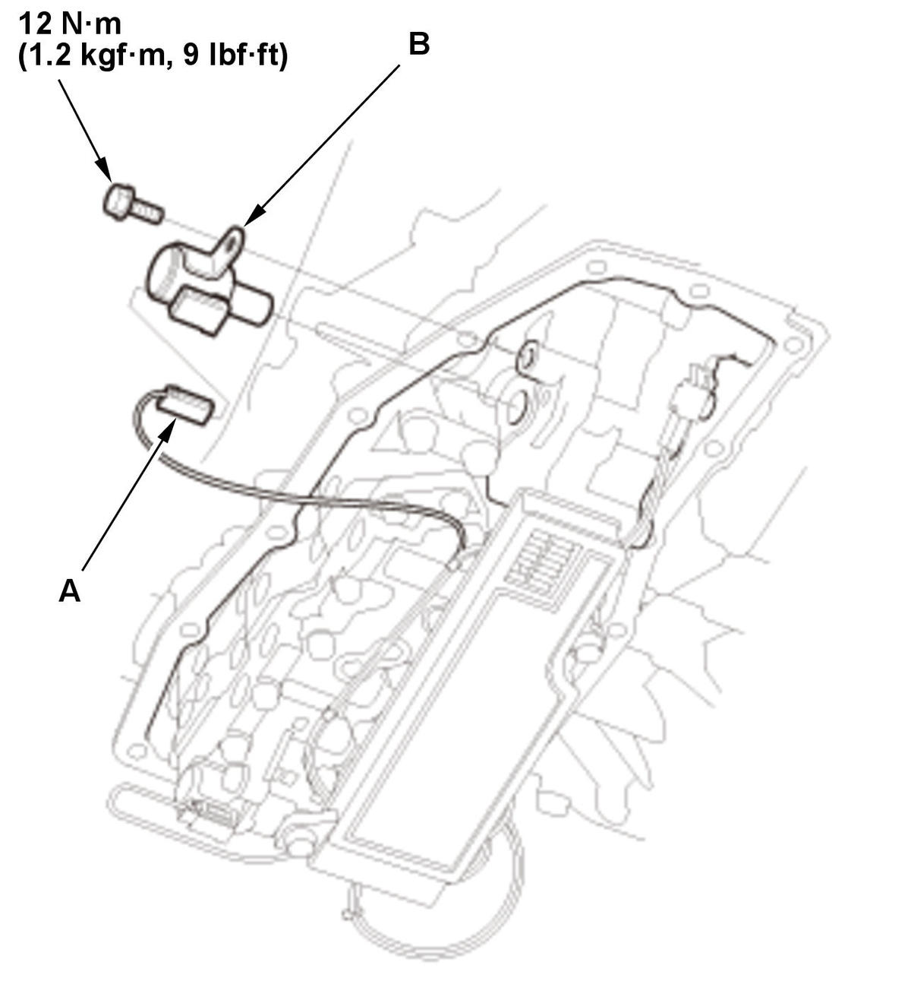

Removal and Installation
NOTE: Keep all foreign particles out of the transmission.
- Vehicle - Lift
- Engine Undercover Plate - Remove
- Engine - Warm Up
1. Start the engine, and warm it up to normal operating temperature (the radiator fan comes on twice). 2. Turn the engine off.
- Transmission Fluid - Drain
- Transmission Fluid Pan - Remove
NOTE: The actual transmission fluid (HCF-2) capacity will vary from the specified capacity based on the length of time the transmission fluid pan is off the transmission. Avoid leaving the transmission fluid pan off for extend periods of time.
- Shift Solenoid Valve O/P - Remove

Courtesy of HONDA, U.S.A., INC.1. Disconnect the connector (A). 2. Remove the shift solenoid valve O/P (B).
- All Removed Parts - Install
1. Install the parts in the reverse order of removal. - Transmission Fluid - Refill
- Transmission Fluid Level - Check